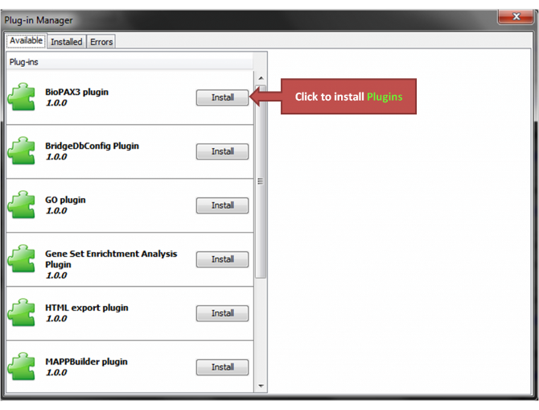
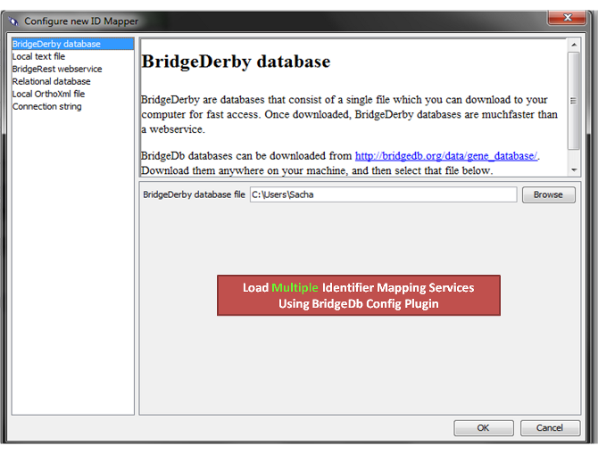
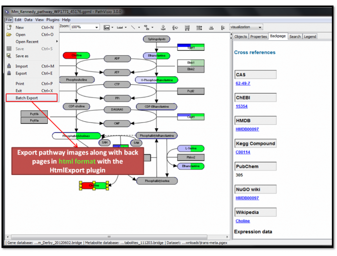

-

Data visualized on pathway in PathVisio.
Advanced features are available via the PathVisio Plug-in Manager.
-

Identifier mapping options are configurable through the BridgeDerby Config Plugin.
-

Acute-phase infection response pathway in PathVisio (Tisoncik et al)